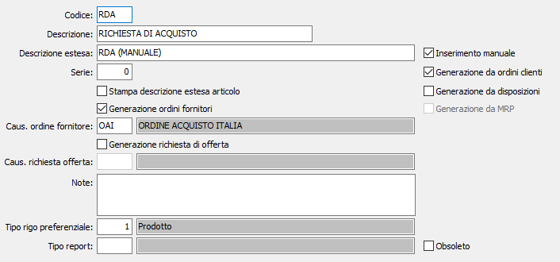

Causali richieste di acquisto
Le causali vengono utilizzate al momento dell’inserimento o della generazione di una richiesta di acquisto e determinano il tipo di documento da emettere.
E’ possibile gestire causali che consentono di inserire documenti manualmente o di generarli da altri documenti, oppure di generare ordini fornitori.

CODICE: codice alfanumerico di 3 caratteri, a libera scelta dell'utente, per individuare la causale attiva. Sul campo sono attive le funzioni di ricerca (F9) sulla tabella stessa.
DESCRIZIONE: campo alfanumerico di 30 caratteri per inserire la descrizione della causale attiva. Questa descrizione viene stampata sui documenti se il programma di stampa lo prevede.
DESCRIZIONE ESTESA: campo alfanumerico di 60 caratteri per inserire la descrizione estera della causale attiva ad uso interno dell’utente. Questa descrizione non viene stampata sui documenti ma viene visualizzata nelle viste.
SERIE: campo numerico per inserire il numero di serie del documento. Ciascuna serie attiva una propria numerazione di documenti. E’ necessario, in fase di immissione del documento, per proporre automaticamente e correttamente il numero progressivo del documento acquisito dalla tabella protocolli.
STAMPA DESCRIZIONE ESTESA ARTICOLO: indica se deve essere riportata e stampata la descrizione estesa dell'articolo, casella con segno di spunta.
GENERAZIONE ORDINI FORNITORI: abilita, se presente la spunta, la generazione di ordini a fornitore a partire dal documento attivo. Se la tipologia di utente lo consente, la generazione può essere contestuale all'inserimento o alla generazione della richiesta.
CAUSALE ORDINE FORNITORE: eventuale codice alfanumerico di 3 caratteri, presente nella tabella Causali ordini fornitori, che definisce il tipo di ordine che sarà generato dal documento attivo. Il valore è significativo se il flag precedente contiene la spunta. Sul campo sono attive le funzioni di ricerca (F9) e manutenzione (CTRL+W) sulla tabella stessa.
GENERAZIONE RICHIESTA DI OFFERTA: abilita, se presente la spunta, la generazione delle richieste di offerta a fornitore a partire dal documento attivo.
CAUSALE RICHIESTA DI OFFERTA: eventuale codice alfanumerico di 3 caratteri, presente nella tabella Causali richieste di offerta fornitori, che definisce il tipo di richiesta di offerta che sarà generato dal documento attivo. Il valore è significativo se il flag precedente contiene la spunta. Sul campo sono attive le funzioni di ricerca (F9) e manutenzione (CTRL+W) sulla tabella stessa.
INSERIMENTO MANUALE: consente di utilizzare la causale attiva per inserire manualmente una richiesta di acquisto (casella con segno di spunta).
GENERAZIONE DA ORDINI CLIENTI: consente di utilizzare la causale attiva per generare una richiesta di acquisto da ordini clienti (casella con segno di spunta).
GENERAZIONE DA DISPOSIZIONI: consente di utilizzare la causale attiva per generare una richiesta di acquisto dai fabbisogni derivanti dalle disposizioni di produzione (casella con segno di spunta).
GENERAZIONE DA MRP: consente di utilizzare la causale attiva per generare una richiesta di acquisto da MRP (casella con segno di spunta).
NOTE: campo note per descrizioni relative al documento attivo.
TIPO RIGO PREFERENZIALE: indica il tipo rigo da proporre in fase di emissione richiesta. Sul campo sono attive le funzioni di ricerca (F9).
OBSOLETO: flag attivabile dall’utente per inibire il possibile utilizzo dell’elemento di tabella in esame nelle successive transazioni.